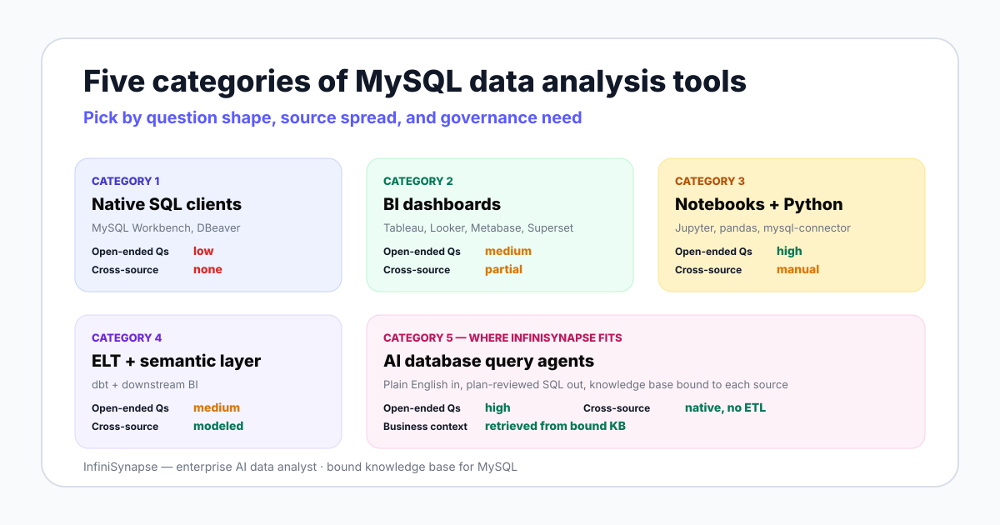

Every MySQL analytics product sold in 2026 fits into one of these five categories, even when marketing blurs the lines. Knowing the category is more useful than knowing the brand because the failure modes are category-level, not product-level.

This is the floor of the market: MySQL Workbench, DBeaver, TablePlus, Sequel Ace. You write SQL, the client runs it, you read the result grid. The official MySQL docs treat Workbench as the reference administration and query surface for the database.
Good for engineers who know exactly which table they need. The category breaks the moment a non-SQL teammate has to answer a question, or when the question spans MySQL plus a CSV plus a Snowflake table — there is no place to put the join.
This is the category most teams default to. Tableau, Looker, Metabase, and Apache Superset all connect to MySQL and let non-engineers build charts. Metabase and Superset are open source; Tableau and Looker are commercial.
Good for monitoring agreed metrics on a schedule. The category breaks on open-ended one-offs — "why did East China drop last quarter" — because the answer has to be modeled before anyone can ask. By the time the model exists, the question has moved on.
Jupyter or Hex with mysql-connector-python plus pandas. Engineers and quantitative analysts query MySQL, transform in Python, plot in matplotlib or Plotly, and publish a notebook to share.
Good for deep ad-hoc analysis where the workflow is genuinely code. The category breaks on shareability — notebooks rot when the schema changes, non-engineers cannot edit them, and there is no audit trail when someone re-runs the cells out of order.
dbt models your MySQL data into clean, version-controlled tables and exposes them through a semantic layer that downstream BI tools query. This category is the modern data stack's answer to metric drift.
Good for organizations with three or more BI tools that need to agree on what "revenue" means. The category breaks when teams adopt dbt before they need it — you pay setup cost in weeks for a problem you would not feel for months.
The newest category and the one InfiniSynapse competes in. The agent connects to MySQL with read-only credentials, retrieves business context from a bound knowledge base, drafts an analysis plan, runs SQL after you review, and returns the answer with an evidence trail. The pattern itself is documented in the Anthropic agent guidance.
Good for open-ended questions and cross-source investigations on MySQL combined with other databases or files. The category breaks when the knowledge base is empty — an agent against bare MySQL with no metric definitions is a confident guesser, not a useful analyst.
The table compares the five categories on the dimensions that actually decide adoption. Every cell reflects category behavior, not a specific vendor's marketing claim.
| Dimension | SQL clients | BI dashboards | Notebooks | ELT + semantic | AI query agents |
|---|---|---|---|---|---|
| Learning curve | SQL only | Low after model | SQL + Python | Modeling skill | Plain English |
| Open-ended Qs | Low | Medium | High | Medium | High |
| Cross-source joins | None | Partial (blends) | Manual (code) | Modeled, post-ELT | Native, no ETL |
| Business context | None automatic | In dashboards | In notebook text | In semantic layer | In bound KB |
| Setup cost | Hours | Weeks per model | Hours per analyst | Weeks to months | Days for pilot |
| Evidence trail | Query history | Tool logs | Notebook file | Lineage graph | Plan + queries + sources |
| Governance fit | DB-level only | Tool RBAC | Weakest | Strongest for known metrics | Agent audit + KB |
| Best for | Engineer-only ad-hoc | Recurring monitoring | Quant deep dives | Multi-team consistency | Cross-source one-offs |
The same tool stack does not fit a solo analyst and a 200-person data org. The table below is what we have actually seen work, not what every vendor claims works.
| Team shape | Primary tool | Second tool | What you skip |
|---|---|---|---|
| Solo data analyst | MySQL Workbench | Metabase (free) when stakeholders ask for the same chart twice | dbt — premature |
| Small team (2-5) | Metabase or Superset | MySQL Workbench for engineer ad-hoc; agent trial when one-offs dominate | dbt and Looker |
| Growing startup (6-20) | Metabase or Tableau | An AI database query agent for the analyst backlog; notebooks for quant work | Full dbt project until metric drift bites |
| Mid-market (20-100) | Tableau or Looker | dbt for shared metrics; AI agent for cross-source investigation | Multiple competing BI tools |
| Enterprise + governance | Looker + dbt | AI agent with bound KB and audit logging; notebooks for data science | Letting individual teams pick their own BI stack |
The first four categories assume the analyst is a person. AI database query agents move part of that work to a system — but only on questions where the system has the context to be right.
Reading the bare MySQL schema is not enough. The BIRD text-to-SQL benchmark shows the gap: human engineers reach 92.96% execution accuracy on grounded SQL tasks, and models still trail that bar on messy production schemas. Closing that gap means giving the agent business semantics, not bigger prompts.
InfiniSynapse pairs each MySQL connection with a bound knowledge base of metric definitions, data dictionary entries, and analysis playbooks. The agent retrieves from this knowledge base as a tool call before it writes any SQL. The database tells the agent what happened. The knowledge base tells the agent what it means in business terms.
This is the moat that matters for MySQL teams: not "AI writes SQL," which everyone now claims, but "AI writes SQL after retrieving your definitions." On a MySQL schema where orders.status = 'F' means refunded in one product line and finalized in another, a knowledge-base-bound agent is the only category-five tool that won't quietly invert your revenue number.
The fastest filter when evaluating an AI database query tool for MySQL: ask whether you can attach a knowledge base, and ask to see the agent cite it.
An AI agent does not replace a BI dashboard for the metrics your finance team reviews every Monday. Dashboards are pre-modeled because the question is pre-known. Letting the agent regenerate that chart from scratch every week burns compute and trust.
It also does not replace dbt. If you have three downstream tools that need to agree on "monthly active user," you need a semantic layer regardless of whether your front end is a chat box. For more on the workflow side, see our walkthrough on MySQL data analysis with AI.
Buyers ask "what is the best tool for MySQL." The useful question is the inverse: which category survives your three constraints.
If you mostly ask "what is yesterday's revenue by channel," your shape is known metric on a schedule. A BI dashboard wins. If you mostly ask "why did revenue drop last quarter and which segments drove it," your shape is open-ended investigation. AI agents or notebooks win, depending on team skill.
If everything lives in one MySQL database and a few CSV exports, any category works. If the question routinely needs MySQL plus a warehouse plus a SaaS export, BI tools and SQL clients struggle. AI agents that connect across sources, or dbt that consolidates first, are the only honest answers.
If you need named-user audit logs, role-based access, and metric lineage for compliance, dbt plus a governed BI tool is the proven path. AI agents are getting there — InfiniSynapse logs plans, queries, and KB retrievals — but a fresh agent without a deployment story is not a governance answer yet. The NIST AI Risk Management Framework gives your security team a shared structure for evaluating any AI-in-the-loop tool.
Connect a MySQL source read-only, attach a small knowledge base, and ask three real questions from your backlog. Review the plan, the queries the agent ran, and the cited sources before judging.
Try InfiniSynapse onlineLast updated: 2026-06-15 · Next scheduled review: 2026-09-15
Category definitions reflect public product documentation from MySQL, Tableau, Looker, Metabase, Apache Superset, dbt Labs, and InfiniSynapse. Benchmark figures come from the BIRD and Spider public leaderboards. Buyer-pattern recommendations are drawn from observed adoption shapes across teams piloting AI database query agents, not from a controlled study.
Conflict of interest: InfiniSynapse publishes this guide and competes in the category-five segment. To reduce bias, we include cases where SQL clients, BI dashboards, notebooks, and dbt are the right answer, and we name specific situations where AI database query is the wrong fit.
Update cadence: Reviewed every 90 days for category shifts, link integrity, benchmark figures, and licensing changes among the listed BI tools.